Joynamoz topildi
Signal to'xtatildi · 05:41
Bomdod vaqti
05:36 — 06:58
Shoshilmang. Vaqt yetarli.
Bomdodni o'qildi deb belgilash
Keyinroq belgilayman
Ilova joynamozni ko'rdi, xolos. Namoz o'qiganingizni faqat siz belgilaysiz.